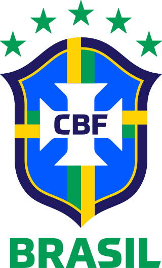
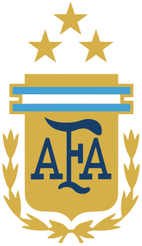
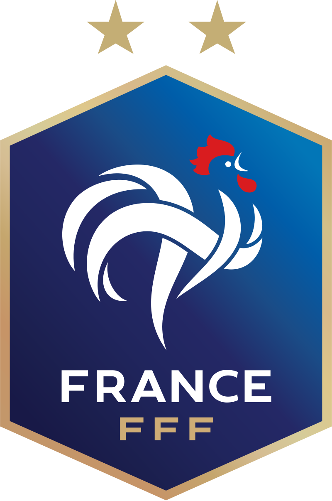
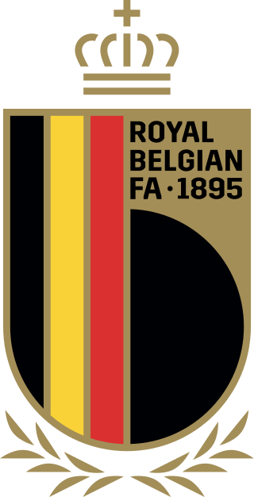
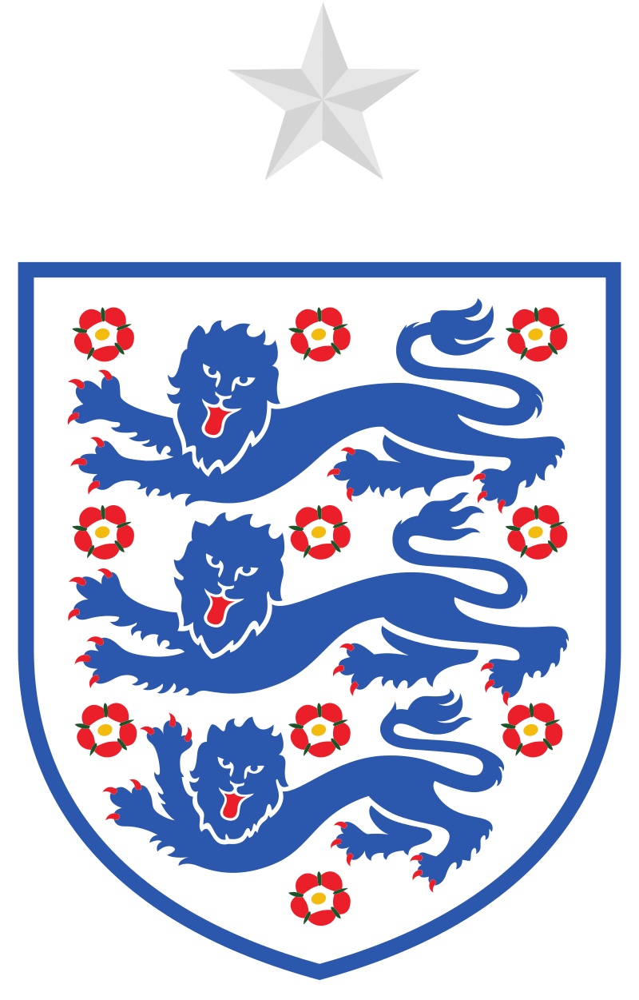

1.Brésil
La Seleção est l'une des meilleures équipes nationales du monde. Elle détient plusieurs records, et a la particularité d’être la seule sélection à n'avoir manqué aucune phase finale de Coupe du monde. Le Brésil est également le pays qui a remporté le plus de fois le trophée mondial, en 1958, 1962, 1970, 1994 et 2002, sur trois continents différents, mais jamais sur son sol. En 1970, il remporte définitivement le trophée Jules-Rimet, mis en jeu lors de la première édition. Organisateur du tournoi à deux reprises, en 1950 et 2014, le Brésil connaît deux défaites vécues comme des drames nationaux, face à l'Uruguay 2-1 pour le titre (match surnommé le Maracanaço), et 64 ans plus tard en demi-finale devant l'Allemagne sur le score fleuve de 7-1.
Pour plus d'informations, visitez cette page.
2.Argentine
La sélection argentine est, avec la France et le Brésil, l'une des trois sélections à avoir remporté toutes les compétitions internationales les plus importantes : Coupe du monde de football, Jeux olympiques, Coupe des confédérations et coupe continentale (la Copa América dans le cas de l'Argentine). Elle compte à son palmarès trois Coupes du monde, remportées à domicile en 1978 face aux Pays-Bas, au Mexique en 1986 devant l'Allemagne, portée cette année-là durant le tournoi par les exploits de Diego Maradona et en 2022 au Qatar face à la France, portée cette fois par les exploits de Lionel Messi. Elle a aussi disputé et perdu trois finales mondiales, battue en 1930 par l'Uruguay, puis en 1990 et 2014 par l'Allemagne. Au niveau continental, elle compte quinze victoires en Copa América depuis 1921 (égalité avec l'Uruguay, détentrice du record).
Pour plus d'informations, visitez cette page.
3.France
La France est la première sélection à avoir remporté toutes les compétitions internationales : Coupe du monde (1998 et 2018), Coupe des Confédérations (2001, 2003), Jeux olympiques (1984), son championnat continental (1984, 2000). Cette performance est égalée par l'Argentine en 2004 et le Brésil, à l'issue des Jeux de Rio 2016. En 2021, elle ajoute la Ligue des nations à son palmarès, devenant ainsi la première formation européenne, et la seule à ce jour, à avoir gagné l'ensemble de ces trophées.
Pour plus d'informations, visitez cette page.
4.Belgique
Les résultats des Diables Rouges lors des qualifications à l'Euro 2016 leur permettent de devenir la huitième nation à accéder à la première place du classement mondial de la FIFA en novembre 20155, tout en étant classée cinquième en Europe au ranking UEFA6. Depuis octobre 2018, et trois ans plus tard, à la fin de l'année 2021, l'équipe de Belgique occupe toujours la première place du classement mondial de la FIFA. Elle perd sa place au profit du Brésil début 2022.
Pour plus d'informations, visitez cette page.
5.Angleterre
L'équipe d'Angleterre de football (en anglais : England national football team) est la sélection de joueurs anglais représentant leur nation lors des compétitions internationales de football masculin, sous l'égide de la Football Association. Alors que la plupart des équipes nationales à travers le monde représentent un État indépendant, les quatre « Nations constitutives » qui forment le Royaume-Uni sont chacune représentées par une équipe nationale distincte lors des compétitions internationales (à l'exception des Jeux olympiques). Ses joueurs sont sélectionnés selon les conditions d'admissibilité en sélection d'un joueur britannique.
Pour plus d'informations, visitez cette page.
